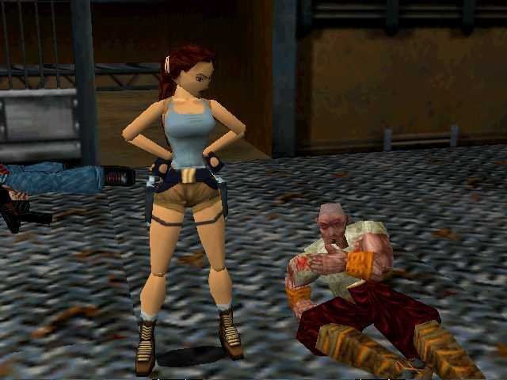

Gustavo Tiji

Como acontece no primeiro jogo também, este faz bastante referência a Indiana Jones. O navio Maria Dora, que foi afundado em uma fase do jogo, foi inspirado no navio SS Andrea Moria, que afundou no mesmo mar que o navio Maria Dora estava.
Com o sucesso do primeiro e do segundo jogo e a quantidade de fãs aumentando, a franquia se estendeu para o terceiro jogo, o terceiro jogo trouxe uma nova jogabilidade para os gamers, movimentos novos para Lara Croft mais veículos, novas armas deixaram seus fãs ainda mais satisfeitos. Desta vez ela viaja para Londres, Antártida, índia e até para a famosa Área 51 em busca de artefatos lendários que se cair em mãos erradas pode mudar o destino da humanidade.
A personagem Sophia Leigh é o mesmo modelo que a Lara Croft, o que muda é apenas o cabelo, as cores e as roupas.
Com a franquia ter se tornando uma febre, resolveram lançar um jogo da época mais juvenil de Lara Croft, quando ela tinha 16 anos. Desta vez o artefato procurado é o Amuleto de Horus, pois o que reza a lenda no jogo, esse objeto garante o aprisionamento do Deus Seth.
A partir deste jogo, a franquia sofre uma decadência em qualidade na jogabilidade e inovação, principalmente estre a troca dos consoles 32bits-64bits para os de 128-bits isso fez com que as vendas dos jogos da franquia abaixassem muito. Nesse jogo, a arqueóloga está desaparecida por circunstancias que ocorreram no último jogo, e a história percorre, com Lara desta vez passando por Irlanda, Egito e Itália tramando suas aventuras.
A desse jogo que começa a dor de cabeça para a franquia, na geração 128 bits, primeiro pelos seus vários adiamentos para o seu lançamento, e também por trazer vários problemas como lentidão e bugs. Neste jogo ela pede ajuda de seu tutor Von Croy para encontrar as antigas Pinturas Obscuras do século XIV.
Este jogo chegou a ser lançado totalmente em português aqui no Brasil.
Em alguns sites é possível cenas do jogo que foram cortadas antes da sua publicação.
Neste jogo houve uma troca de produtora, que no caso a nova é a Crystal Dynamics, que já estreia com o pé direito, com jogabilidade ótima para os novos consoles da época. Lara Croft foi remodelada sem usar a base dos jogos antigos. Desta vez ela viaja por Cazaquistão, Japão, Gana, Bolívia e Peru para desvendar os mistérios da lendária espada Excalibur, que está relacionado com o desaparecimento de sua mãe.
Em Anniversary, é a remodelagem do primeiro jogo da franquia para os novos consoles trazendo obviamente mais animação e texturas para o jogo com mais nitidez e detalhes. O jogo sai daquele padrão de movimentos duros e passa para comandos mais fluidos e com novos truques para a arqueóloga.
Ele marca a entrada da franquia na sétima geração dos consoles com a continuação do Tomb Raider Legend. Desta vez Lara está atrás do poderoso Martelo de Thor, que também vive pela sua busca incansável atrás de sua mãe. A arqueóloga passa por México, Inglaterra, Nepal e Tailândia. A jogabilidade fica ainda mais fluida que o jogo anterior.
Em Tomb Raider Anniversary, Lara deixa passar vários mistérios que são resolvidos apenas neste jogo.
No trailer do jogo mostra a arqueóloga explodindo a própria mansão, mas que na verdade não passa de um clone.
Este é o primeiro jogo da franquia a franquia faz de um episódio paralelo em relação aos outros jogos. O jogo trouxe também a inovação da câmera isométrica e a possibilidade de jogar com dois jogadores, que no caso foi disponível pois a arqueóloga ganha um parceiro para ajudá-la, seu nome é Totec, um guerreiro muito antigo.
Após o lançamento do último jogo, perceberam que a franquia não estava mais empolgando os seus fãs, que a história estava ficando um pouco maçante, foi aí que a Crystal Dynamics tem a iniciativa de começar a história do zero, fazendo uma coisa inimaginável pelos seus fãs. Trocou a Arqueóloga invencível, por uma Lara Croft mais frágil e sentimental que deve passar por cenários abertos e mais perigosos.
Esse foi a sequência direta do Lara Croft And The Guardian of Light, na mesma jogabilidade do anterior, porém agora os gamers vão ter a experiência de jogar em até 4 jogadores tanto online quanto off-line. Sendo cada jogador tendo uma habilidade única para tornar o jogo mais dinâmico.
É a continuação do Tom Raider de 2013, trazendo uma arqueóloga jovem e um pouco mais madura desde a sua última experiência. Neste jogo, Lara vai em busca de mistérios que a acabam levando para Kitezh, que fica na Sibéria. Lendas ocultas afirmam que esse local esconde segredos sobre a imortalidade.
Com o crescimento dos games nos smartphones, a franquia também se estende para a parte de mobile. Com a trama completamente distinta da franquia, o intuito do jogo é correr o máximo com a arqueóloga desviando de objetos e evitar para não em buracos fundos e acabar morrendo.

Lara Croft GO foi o segundo jogo lançado no mundo dos mobiles, e também com um episódio diferente da saga principal, o seu objetivo e analisar e resolver os problemas para passar de fase, matando monstros, desviar de armadilhas e descobrir o segredo da Rainha do Venom.